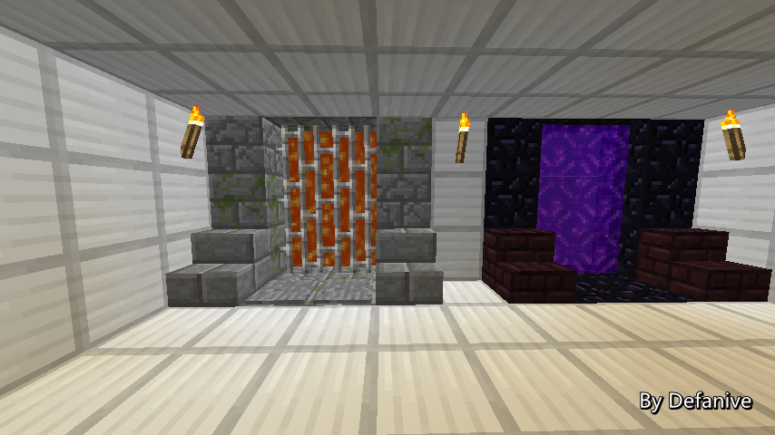

首页
上一页
259
260
261
262
263
264
264
265
266
267
268
269
下一页
末页
defanive2
无尽黑夜
14
录刷铁机的时候就很期望可以在录的时候刷出一只铁傀儡
这样就可以展示刷铁机是可以正常工作的
结果运气也非常好，看过去的时候正好一只铁傀儡被刷出了正在下落
而且展示完上面之后，展示水路的时间也减少了
总之录的时候运气非常不错
20723楼
2013-08-07 11:49
defanive2
无尽黑夜
14
回到地下室录按钮杀铁傀儡的时候出了点问题
由于用F1关了GUI，一直没有瞄准木质按钮
按了好多下都没按到。。
不过最后终于按到了，也还算顺利
最后剪视频的时候，由于杀死的时间有点长
而且被杀死的时候声音很吵
于是就把其中一部分给剪掉了
实际上烧死的时间还会长一点
20725楼
2013-08-07 11:51
defanive2
无尽黑夜
14
录制全自动甘蔗场的时候想能录到一个靠近窗口的甘蔗生长并被破坏的过程
但是等了好久都没等到，或者长出的甘蔗是靠另一侧的，过来好一会才等到
编辑视频的时候就把等待的这一段时间给剪掉了。。
不过RP是守恒的，打开箱子的时候正好物品就在传输
20728楼
2013-08-07 11:56
defanive2
无尽黑夜
14
录制刷怪塔的时候个人就感觉非常的满意
整个塔的效果都展现出来了，而且运作非常正常
不过在打怪的时候有点担心会把后面的方块打坏。。
心细的朋友可以看到，切换模式后水路里面还残留有几只怪
因为刷怪塔的模式切换系统本来就不是对启动时切换而设计的
所以说就出了水路里面的水在切换时被收回了
于是怪就残留在水路里面没有被冲下来
不过总体来说，自己录制的时候也非常感叹刷怪塔实在是非常的满意
尤其是刷怪的速度
20729楼
2013-08-07 12:00
defanive2
无尽黑夜
14
录小黑塔的时候大家也发现了，打坏了几个栏杆 = =
当时很想重录，不过已经录了好久的视频了
于是就决定就这样吧。。
最后还是好多人发现了。。
20730楼
2013-08-07 12:03
defanive2
无尽黑夜
14
录完之后感觉终于完成了！
然后一到视频文件夹看，发现录像有24分钟 = =
但是我只找好了1个很欢快的BGM（就是视频中的第一个BGM）
于是蛋疼的跑去YY问聪聪和新妞他们的想法
然后他们说可以剪歌，把歌的高潮部分循环播放就好了。。
讨论很久后还是决定去把那几张专辑都下载下来听上一遍找找歌算了
最后找好了4首，勉强够时间，最后再把第一首重新播放作为结尾曲就好了
反正连BGM都蛋疼了好久，制作过程就不说什么了。。
PS 音乐都是从Lapfox Trax上下载的
里面的各种电音和remix都很不错，需要背景音乐的可以去找找
不少音乐都是免费的
20736楼
2013-08-07 12:14
defanive2
无尽黑夜
14
最后的一段文字刚写完的时候觉得有点短了
不过最后做到视频的时候才发现滚字幕滚了好久，差不多有1分钟了
写的时候文笔也不是很好，当时还觉得万一一个视频最后搞砸了就悲剧了
做完之后还做了片头
想了很久决定以直播贴的1L作为片头引入
一开始想直接把1L截图整个完整贴出来的
不过发现字太小了，渲染出来就看不到了
于是就分成了2段。。
而且还对1L的图片PS了一下
把删除按钮和我ID下面的等级都给P掉了
也不知道为什么想要P掉，但是就是感觉不P掉很奇怪。。
20739楼
2013-08-07 12:17
defanive2
无尽黑夜
14
渲染的时候还出了好几次问题
渲染了4次才终于正常了，光渲染+排错就用了2个多小时
昨晚都已经凌晨了，马上上传视频
传完之后把视频名字改成了(null)，缩略图改成黑屏
这样就不会剧透大家了 = =
做完之后，一切就绪，还剩不到24小时就周年了
当时的想法就是，我艹，以后再也不做这么长的视频了！
20742楼
2013-08-07 12:21
defanive2
无尽黑夜
14
不过最后这个视频大家都反响还是非常不错的
非常的感动，激动了好久都没睡觉
加上过后几天的喵服活动，于是生物钟就彻底的乱了。。
但是那时的感觉就是，花这么久做一个视频也算值了
大家也都很喜欢，也收到了很多祝贺
睡醒觉之后个人中心回复超过了1000+
第一次真切感觉到大家的支持实在是非常的热烈
20743楼
2013-08-07 12:25
defanive2
无尽黑夜
14
好吧，周年庆视频的故事就是这样了
有点奇奇怪怪的一些琐事，不过感觉是挺值得分享给大家的
今天就先到这里了，去睡觉，争取调好生物钟！
20744楼
2013-08-07 12:26
defanive2
无尽黑夜
14
PS 视频中出现的装置都是很具有代表性的
不过限于视频长度，还有很多很不错的装置没有展示出来
有些是因为未完成，暂时效果还不好
有些是因为版本更新后无法使用，需修正
这个世界里面的东西太多了，无法一一展示实在是很可惜
不过一直观看直播的朋友们肯定记得每一个装置的历史
20745楼
2013-08-07 12:28
defanive2
无尽黑夜
14
好久没直播了，今天我们来继续打MC吧！
其实下午和晚上的时候都在玩MC
是在和繁华，
@ztc囧儿
，
@sinew28
一起录视频
不过都是在玩解密，跑酷类的东西
稍微玩累了，我们回到生存这方面继续玩吧！
——来自 MCLive
20788楼
2013-08-10 09:48
defanive2
无尽黑夜
14
如果大家有看之前的两个预告视频的话
那么应该知道我在生存世界里面新加的两样东西
第一样就在防火间里，就是地狱门旁边的遗迹门
这个遗迹门的作用就是踩在踏板上之后
不到1秒就会把我传送到遗迹
这样很大程度上方便了我附魔和修理东西
这个遗迹门和地狱门的外观设计都有
@sinew28
的帮助！
PS Sinew也是喵服里的成员，以建筑为主
他在优酷和U2B上都有视频空间
现在他正在直播Underground II的生存视频
同时也会负责 UHC S4 的视频发布
大家要多多关注哦
——来自 MCLive
20797楼
2013-08-10 09:56
defanive2
无尽黑夜
14
另外一个新加的机器就是保护伞装置
这个装置的作用是，在野外探险或者挖矿的时候
遇到危险了，把指定方块（我使用的是楼梯）放下
过了1秒左右就会把我传送回家
这个是作为外出探险的安全保护
可以避免遇险死亡而无法找回丢失的物品
——来自 MCLive
20800楼
2013-08-10 09:58
defanive2
无尽黑夜
14
做这个遗迹传送门的初衷是为了节省往返END的时间
在小黑塔里进行附魔以及修复装备是很常用的
但是每次去END都需要先过地狱门，再跑上个几百米
然后从地狱门出来，再进遗迹
如此一来反而不想经常去END了
有了这个装置之后，往返变得非常的简单
——来自 MCLive

20807楼
2013-08-10 10:03
defanive2
无尽黑夜
14
相信大家看了预告之后都对这个装置的机制进行了思考
这个直播是原版单机生存
自然是没有命令方块，没有开作弊，没有MOD什么的
遗迹门使用的是小黑眼
原版中只有小黑眼才可以做到传送玩家
——来自 MCLive
20811楼
2013-08-10 10:06
defanive2
无尽黑夜
14
但是小黑眼传送是在落地时执行的，投掷距离平均只有50格左右
那么小黑眼是如何把我传送到直线距离800格以外的遗迹呢
这里就用到了chunk的相关知识
投掷出的小黑眼也是entity
自然，当一个chunk被卸载掉之后，小黑眼就不再被更新了
那么小黑眼就不会落地，不会传送玩家等等
可以理解为小黑眼被冻结了
——来自 MCLive
20813楼
2013-08-10 10:09
defanive2
无尽黑夜
14
那么要怎么做到把chunk卸载呢
可以通过传送到其他世界，例如END或者地狱
那么这个机器的工作原理就是
当玩家向上扔了一个小黑眼之后
在小黑眼落地之前，打开这个玻璃闸门
让玩家掉落到END传送门中，进入到END
自然小黑眼所在的chunk就被卸载了
小黑眼也就被冻结在了空中
——来自 MCLive
20817楼
2013-08-10 10:12
defanive2
无尽黑夜
14
当再次需要传送的时候
利用之前的强制加载chunk的知识
把小黑眼所在的chunk进行active加载
那么小黑眼又会开始重新接受到更新，开始下落
撞击之后，把玩家传送到这里
于是整个瞬移部分的原理就是这样了
——来自 MCLive
20819楼
2013-08-10 10:15
defanive2
无尽黑夜
14
而电路部分个人也认为设计的非常不错
电路最大的难点就是在于要检测到玩家什么时候扔了小黑眼
这样才能准确的在小黑眼落地之前把玩家传送到END
而小黑眼碰到任何方块都会发生传送
因此不可能通过传统的方法，例如绊线、压力板等进行检测
这里是我的电路设计
玩家站在下方，手里拿着一个小黑眼，对着陷阱门按住右键
右键时并不会扔出小黑眼，而会打开陷阱门
打开陷阱门后右键才会扔出小黑眼
而第一次打开陷阱门时，矿车就会落下，碰到压力板
这样就激活了电路，同时检测到了小黑眼的扔出
因此这样就可以准确的进行延迟，让玩家在小黑眼落下前进END
——来自 MCLive
20820楼
2013-08-10 10:21
defanive2
无尽黑夜
14
小黑眼这一部分也做了特殊的处理
在上方做了很多层的水流装置
每层水流都流向2x2的中心
这样的水流层可以保证小黑眼在落下时会准确的落在中心
同时水流层也降低了小黑眼的飞行速度，更快的进行落下
这样就缩短了上方所需的高度
同时也缩短了重置这个瞬移装置所需的时间
——来自 MCLive
20822楼
2013-08-10 10:24
defanive2
无尽黑夜
14
另外一方面，在落地点加了4个绊线
这4个绊线的作用就是让小黑眼撞击到绊线时就瞬移玩家
有时小黑眼落地时玩家会陷在地面中
这样的话玩家就有可能会卡在玻璃里，进而掉进END
提高一格放置绊线就可以防止这样的情况发生
——来自 MCLive
20824楼
2013-08-10 10:26
defanive2
无尽黑夜
14
旁边还有一个强制进入END的按钮
以及一个地狱门，作为备用的出入口
这样即使没有带小黑眼
或者由于MC更新导致机器失效时
仍然可以正常的出入遗迹
——来自 MCLive
20825楼
2013-08-10 10:27
defanive2
无尽黑夜
14
使用时很简单，就和之前所说的使用方法执行就好了
站在靠近中间的地方（不需要正中心也可以正常工作）
手里拿着一个小黑眼，对着陷阱门按住右键即可
当扔出小黑眼后，就可以松开右键了
过几秒后小黑眼就快落下时
电路就会打开下面的玻璃闸门，让玩家进入END
——来自 MCLive
20826楼
2013-08-10 10:29
defanive2
无尽黑夜
14
那么接下来来说说家这边激活传送的电路吧
外观上，模仿了右边地狱门的设计
当然，下面放了2个石质踏板用于激活电路
——来自 MCLive
20828楼
2013-08-10 10:32
defanive2
无尽黑夜
14
下面的电路首先是给到了一个投掷器中
投掷器里面装满了小黑眼
这个投掷器只是给玩家补充小黑眼的
避免我去遗迹的时候背包里面没有小黑眼而导致无法重置电路
PS 无论发射器和投掷器都无法射出小黑眼的
因为被投出小黑眼会带有投出玩家的名字
这样在落地时才有可能知道应该瞬移哪个玩家
而发射器和投掷器发射出的小黑眼应该算是哪个玩家发射的呢
这个是没办法判断的
所以说发射器和投掷器都是以物品的方式把小黑眼扔出
——来自 MCLive
20830楼
2013-08-10 10:35
defanive2
无尽黑夜
14
接下来这条电路会首先经过一个脉冲缩短器
这个脉冲缩短器会把踏板的信号缩短到4tick
——来自 MCLive
20831楼
2013-08-10 10:37
defanive2
无尽黑夜
14
接下来，电路会一直延续到800多格以外的遗迹
自然信号是不可能延续那么远的
中间会有很多个这样的无延迟中继器
这种无延迟中继器设计耗资比较大，但是建造起来简单
具体的原理可以参考我的无延迟红石电路的帖子
自己理解分析一下
——来自 MCLive
20833楼
2013-08-10 10:39
defanive2
无尽黑夜
14
虽然说直线距离只有800格左右
但是实际上电路要铺上近1000格
这么长的电路还要挖地道铺，的确是耗时很久的工程
不过如果大家还记得的话，很久以前我有这个无限黑曜石工程
这个工程在spawn chunk里面引了一条红石电路
一直用中继器连接到其中一个遗迹里
而spawn chunk距离我家并不远
因此我只把电路连接到了这个工程的电路
然后把这个工程的所有中继器都换成了无延迟中继器
工作量大约在4、5个小时左右
PS 当然这是有旧工程的基础上进行的
旧工程花了10+个小时
一直废弃到现在，终于派上用场了
——来自 MCLive
20836楼
2013-08-10 10:45
defanive2
无尽黑夜
14
这条无延迟电路一直经过1000格到了END之后
就分开成多条电路分支
分别流入END传送门周围的5x5区块中
这样END传送门这个区块，也就是有小黑眼的区块
就会被强制的active加载了
进而小黑眼就可以正常的接受到更新了
于是就落地把玩家传送了过来
——来自 MCLive
20839楼
2013-08-10 10:49
首页
上一页
259
260
261
262
263
264
264
265
266
267
268
269
下一页
末页